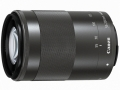

器材库 > APS画幅镜头 > EF-M 55-200/4.5-6.3 IS STM

详细规格
镜头类型
远摄变焦镜头
发布日期
2014-06-17
厂家推荐价格
49,000.00 （日元）
焦距
55mm-200mm
等效35mm画幅焦距
88mm-320mm
最大光圈
f/4.5-6.3
最小光圈
f/22-32
视角（对角）
27°50‘~7°50’
镜头结构
17片/11组
非球面镜片
1片
低/超低色散镜片
1片
光圈叶片
7片
最近对焦距离
100cm
最大放大倍率
0.21倍
驱动马达
STM
滤镜口径
52mm
镜头卡口
Canon EF-M
防抖
是
颜色
黑色
尺寸
60.9×86.5mm
重量
260g
备注
后对焦；全时手动对焦。
wanjiash2016-08-03 18:314.25 分
操作性 4.50耐用性 4.00性价比 4.50解像力 4.00色彩还原 4.50机械结构 4.00
产品图 / 样片
EF-M 55-200/4.5-6.3 IS STM产品图